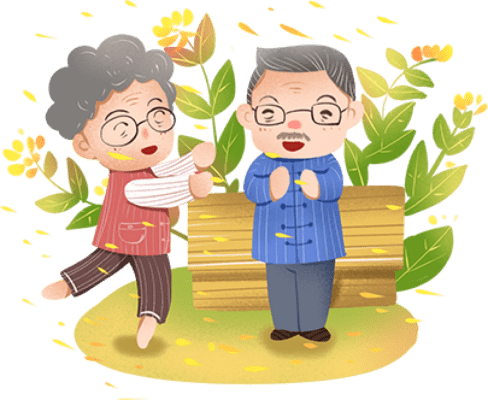

성공적인「효도여행」을 만들어내기 위한 요소

POINT1
부모님 위주로 맞춰진 여행
일반적으로 부모와 자식은 생활습관이 다르기 때문에, 많은 부모님들이 여행 중에서도 그 생활습관을 유지하고 싶어 하는 분들이 많이
있습니다.
예를 들어, 부모님들은 아침 일찍 일어나 여행 일정을 시작하기를 원하지만, 반대로 자식 쪽에서는 여유로운 오전 시간을 보내고 싶어 하는 사람들이 많습니다.
또한 부모님과 자식들 간의 체력 차이도 있기 때문에, 한꺼번에 많은 명소를 방문하는 일정을 세우기보다는 적당히 휴식도 취할 수 있는 시간을 확보해두는 쪽으로 짜는
것도 매우 중요합니다.

POINT2
부모와 자식 모두 행복한 추억을 만들 수 있는 여행
부모님들은 여행을 하면, 자식들과 소중한 추억을 남기고 싶어 합니다.
예를 들어 가족사진을 찍는다거나, 아니면 고향에는 없는 그 지역 특유의 체험 같은 이벤트에 관심이 많습니다.
이러한 체험을 통해서 여태껏 한 번도 보지 못했던 부모님의 또 다른 모습을 볼 수 있을지도 모를 거라 생각됩니다!

POINT3
안심할 수 있는 배려 있는 여행
부모님들에게 여행이란 것은 당연히 즐거운 일이지만, 동시에 부모님은 가보지 못한 새로운 장소에 간다는 것에 대해 자식들의 생각보다
훨씬 걱정하십니다. 시간을 계속 신경 쓰시거나 몇 번이고 계속 스케줄을 확인하는 등 한편으로는 마음의 짐을 안고 있습니다.
그렇기 때문에 여행을 가기 전에는 충분히 부모님과 상의를 하며 안심시켜드리는 것이 중요합니다. 여행 중에도 시간을 철저하게 관리하는 것이 행복한 여행을 위한 길이라
생각합니다.